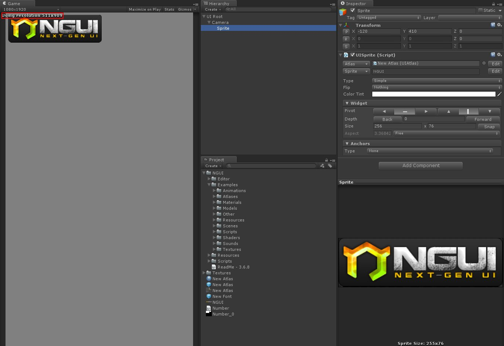
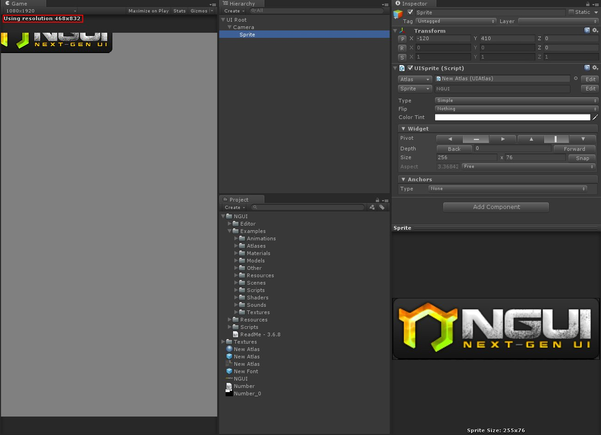
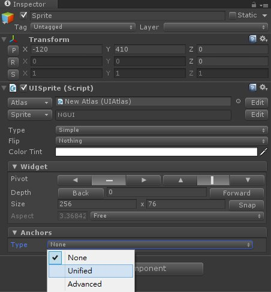
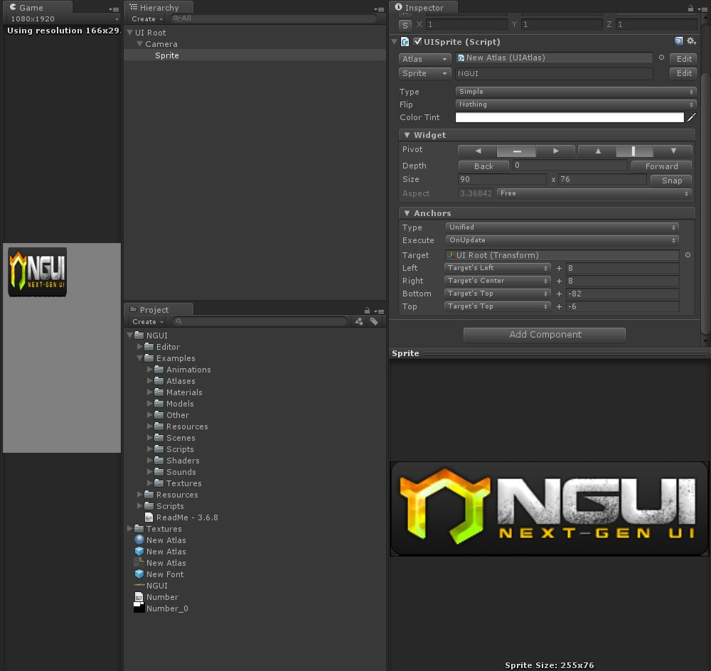
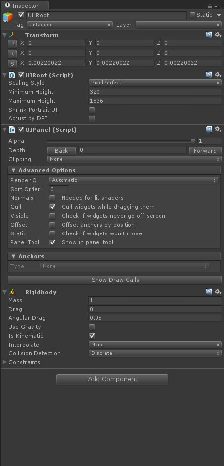
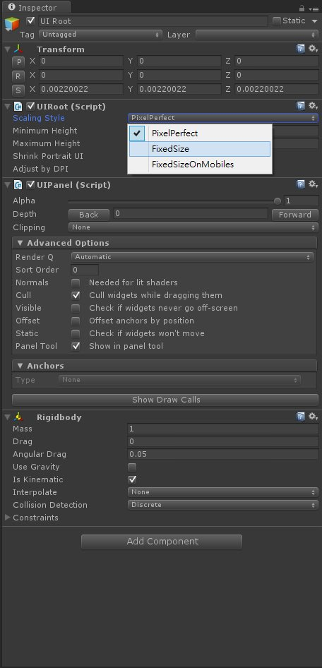
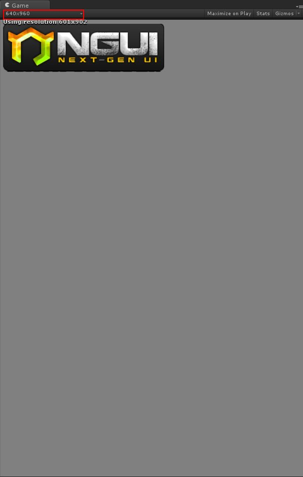
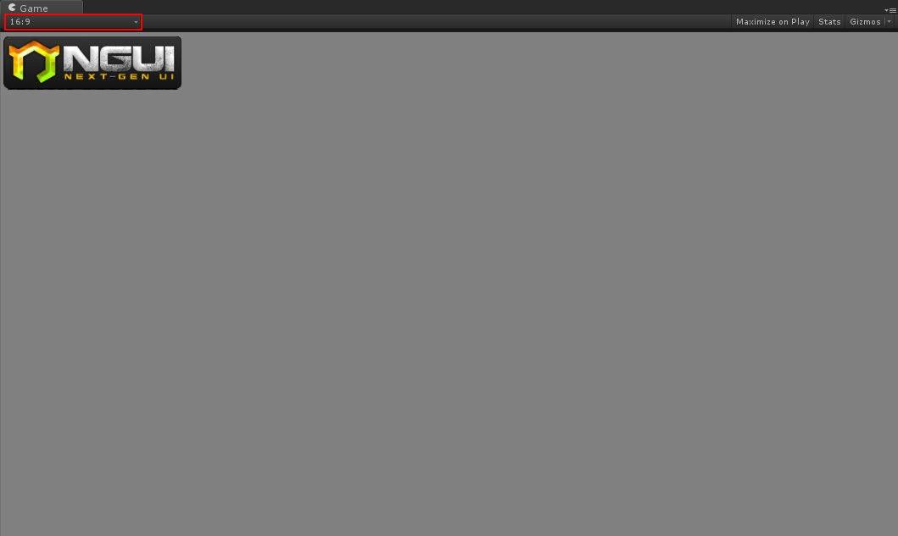

往往在調整UI時，最頭痛的就是要適應各種解析度
而NGUI中當然也處理了這部分的問題
首先產生出一個 UI Sprite
將其位置設定為 -120, 410, 0

這個UI我希望他可以對齊左上角
但如果在預設的情況下去對Game面板做縮放
會有這種情況發生

這裡先不討論導致這種情況的原因
直接提供解決方法
點選UI Sprite → Anchors
將Type切換至Unified

這時會發現到雖然圖片已經對你希望的位置做對齊
但會有被拉扯的情況

如果有發生圖片被拉扯的情況
點選 UI Root 看看裡面的設置

由於NGUI預設的ScalingStyle是PixelPerfect
預設的情況下NGUI會自動針對Minimum Height以及Maximum Height去對圖片做縮放
在此先不討論詳細情況
將Scaling Style切換至Fixed Size
則可以讓圖片不會失真

完成這兩個設置後
不管Game面板如何變動
甚至切換解析度
都不會導致圖片無法對齊或失真

